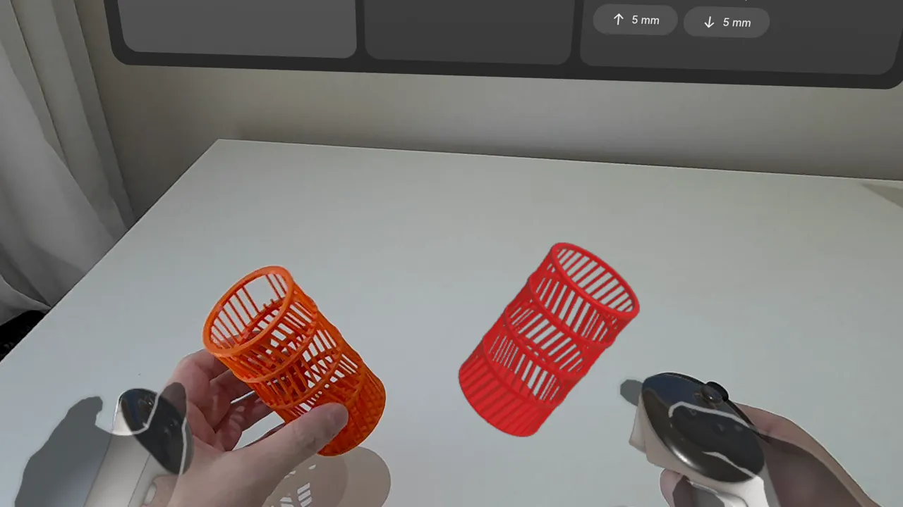
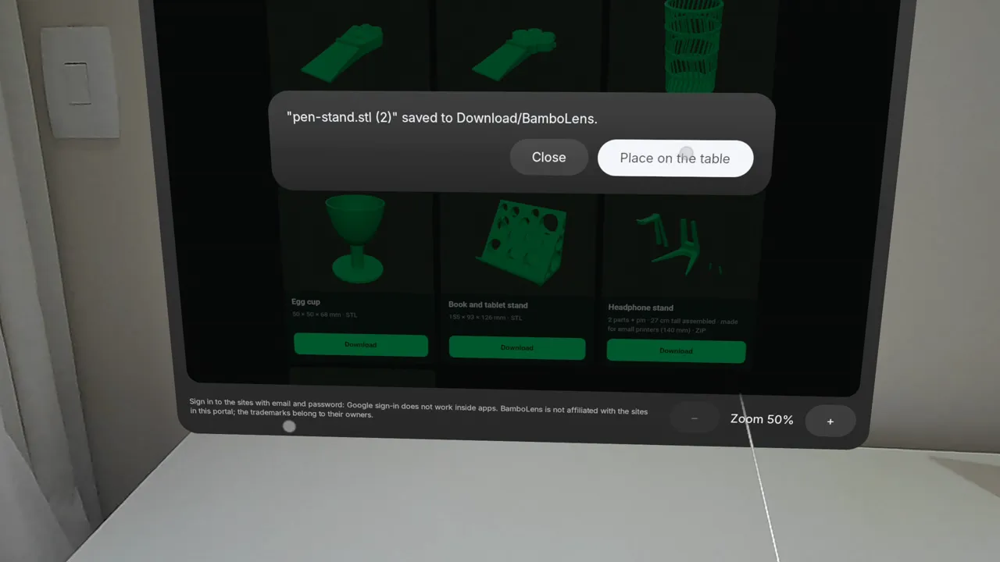
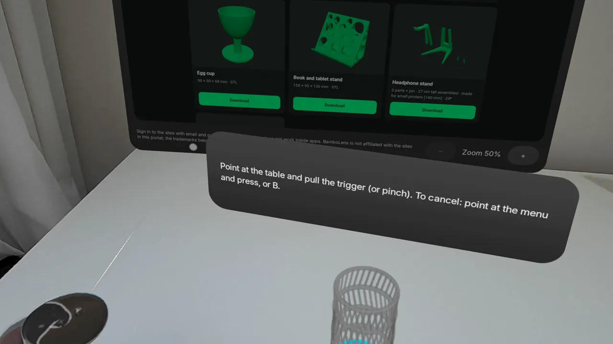
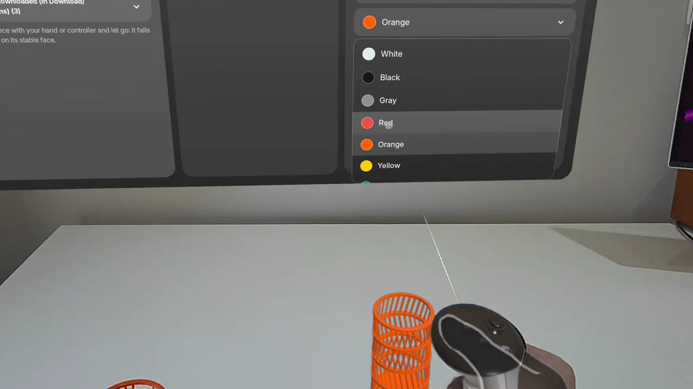
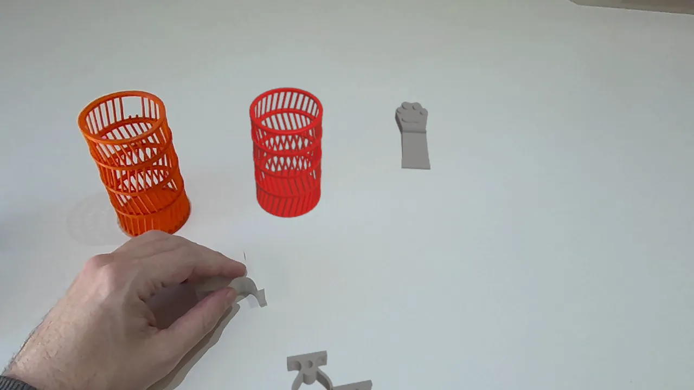

Abra arquivos STL, 3MF ou ZIP e coloque a peça na sua mesa de verdade, em tamanho real, com o passthrough do Meta
Quest. Confira medidas, encaixe e cor de filamento antes de gastar material e tempo de impressão.

A peça impressa ao lado do modelo, em tamanho real.

Baixe modelos sem tirar o headset.

Aponte para a mesa e escolha o lugar.

Cores de filamento reais.

Várias peças na mesa, com gravidade e colisão.
Na sua mesa, em tamanho real
Aponte para a mesa e escolha onde a peça fica.
Gravidade e colisão: a peça assenta na face mais estável e pode ser empilhada.
Cotas em milímetros ao redor da peça.
Cores de filamento reais
Paleta de PLA, PLA fosco, PLA seda, PETG, ABS/ASA e TPU.
Arquivos 3MF multicoloridos abrem com as cores do projeto.
Antes de imprimir
Volume e filamento estimado no material da cor escolhida.
Diz se a peça cabe na sua impressora, entre as mais vendidas.
Seus arquivos, do jeito que vêm
STL, 3MF e pacotes ZIP com várias peças.
Abra direto de outros apps do Quest com "Abrir com" ou "Compartilhar".
mm, cm ou polegadas; eixo Z para cima.
Modelos grandes simplificados automaticamente.
Portal de modelos
Navegue por sites de modelos 3D dentro do app e baixe o arquivo direto para a mesa, sem tirar o headset.
Abre archivos STL, 3MF o ZIP y coloca la pieza sobre tu mesa real, a tamaño real, con el passthrough de Meta Quest. Comprueba medidas, encaje y color del filamento antes de gastar material y tiempo de impresión.
La pieza impresa junto al modelo, a tamaño real.Descarga modelos sin quitarte el visor.Apunta a la mesa y elige el lugar.Colores de filamento reales.Varias piezas sobre la mesa, con gravedad y colisión.
Sobre tu mesa, a tamaño real
Apunta a la mesa y elige dónde va la pieza.
Gravedad y colisión: las piezas se asientan sobre su cara más estable y se pueden apilar.
Cotas en milímetros alrededor de la pieza.
Colores de filamento reales
Paleta de colores de PLA, PLA mate, PLA seda, PETG, ABS/ASA y TPU.
Los archivos 3MF multicolor se abren con los colores del proyecto.
Antes de imprimir
Volumen y filamento estimado en el material del color elegido.
Te dice si la pieza cabe en tu impresora, entre los modelos más vendidos.
Tus archivos, tal como vienen
STL, 3MF y paquetes ZIP con varias piezas.
Ábrelos directamente desde otras apps de Quest con «Abrir con» o «Compartir».
mm, cm o pulgadas; opción de eje Z hacia arriba.
Los modelos grandes se simplifican automáticamente.
Portal de modelos
Navega por sitios de modelos 3D dentro de la app y descarga un archivo directamente a tu mesa, sin quitarte el visor.
Öffne STL-, 3MF- oder ZIP-Dateien und stelle das Teil in Originalgröße auf deinen echten Schreibtisch – mit dem Passthrough der Meta Quest. Prüfe Maße, Passform und Filamentfarbe, bevor du Material und Druckzeit investierst.
Das gedruckte Teil neben dem Modell, in Originalgröße.Modelle herunterladen, ohne das Headset abzunehmen.Auf den Tisch zeigen und den Platz wählen.Echte Filamentfarben.Mehrere Teile auf dem Tisch, mit Schwerkraft und Kollision.
Auf deinem Tisch, in Originalgröße
Zeig auf den Tisch und wähle, wo das Teil hin soll.
Schwerkraft und Kollision: Teile legen sich auf ihre stabilste Fläche und lassen sich stapeln.
Maße in Millimetern rund um das Teil.
Echte Filamentfarben
Farbpalette aus PLA, mattem PLA, Silk-PLA, PETG, ABS/ASA und TPU.
Mehrfarbige 3MF-Dateien öffnen sich mit den Farben des Projekts.
Vor dem Druck
Volumen und geschätzter Filamentverbrauch im Material der gewählten Farbe.
Zeigt, ob das Teil auf deinen Drucker passt – unter den meistverkauften Modellen.
Deine Dateien, wie sie kommen
STL, 3MF und ZIP-Pakete mit mehreren Teilen.
Direkt aus anderen Quest-Apps öffnen mit „Öffnen mit“ oder „Teilen“.
mm, cm oder Zoll; Option Z-Achse nach oben.
Große Modelle werden automatisch vereinfacht.
Modellportal
Durchstöbere 3D-Modell-Websites in der App und lade eine Datei direkt auf deinen Tisch, ohne das Headset abzunehmen.
Ouvrez des fichiers STL, 3MF ou ZIP et posez la pièce sur votre vrai bureau, en taille réelle, grâce au passthrough du Meta Quest. Vérifiez les dimensions, l'ajustement et la couleur du filament avant de dépenser matière et temps d'impression.
La pièce imprimée à côté du modèle, en taille réelle.Téléchargez des modèles sans retirer le casque.Visez le bureau et choisissez l'emplacement.De vraies couleurs de filament.Plusieurs pièces sur le bureau, avec gravité et collisions.
Sur votre bureau, en taille réelle
Visez le bureau et choisissez où placer la pièce.
Gravité et collisions : les pièces se posent sur leur face la plus stable et peuvent s'empiler.
Cotes en millimètres autour de la pièce.
De vraies couleurs de filament
Une palette de couleurs PLA, PLA mat, PLA soie, PETG, ABS/ASA et TPU.
Les fichiers 3MF multicolores s'ouvrent avec les couleurs du projet.
Avant d'imprimer
Volume et filament estimé dans la matière de la couleur choisie.
Indique si la pièce tient sur votre imprimante, parmi les modèles les plus vendus.
Vos fichiers, tels quels
STL, 3MF et archives ZIP de plusieurs pièces.
Ouvrez-les directement depuis d'autres applications du Quest avec « Ouvrir avec » ou « Partager ».
mm, cm ou pouces ; option axe Z vers le haut.
Les gros modèles sont simplifiés automatiquement.
Portail de modèles
Parcourez des sites de modèles 3D dans l'application et téléchargez un fichier directement sur votre bureau, sans retirer le casque.
Open STL, 3MF or ZIP files and place the part on your real desk, at real size, with Meta Quest passthrough. Check
dimensions, fit and filament color before spending material and print time.
The printed part next to the model, at real size.Download models without taking off the headset.Point at the desk and choose the spot.Real filament colors.Several parts on the desk, with gravity and collision.
On your desk, at real size
Point at the desk and choose where the part goes.
Gravity and collision: parts settle on their most stable face and can be stacked.
Dimensions in millimeters around the part.
Real filament colors
A palette of PLA, matte PLA, silk PLA, PETG, ABS/ASA and TPU colors.
Multicolor 3MF files open with the project's colors.
Before you print
Volume and estimated filament in the material of the chosen color.
Tells you whether the part fits your printer, among the best-selling models.
Your files, as they come
STL, 3MF and ZIP packages with many parts.
Open them straight from other Quest apps with "Open with" or "Share".
mm, cm or inches; Z-up option.
Large models are simplified automatically.
Model portal
Browse 3D model websites inside the app and download a file straight to your desk, without taking off the headset.